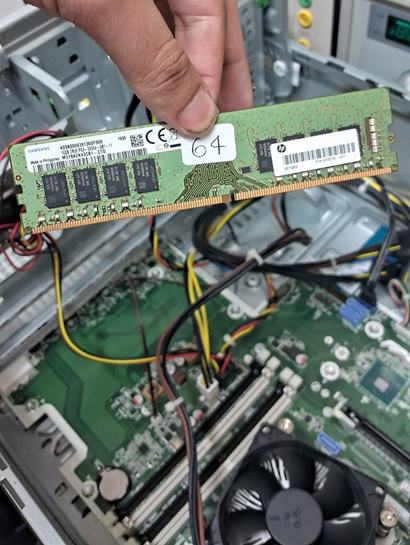
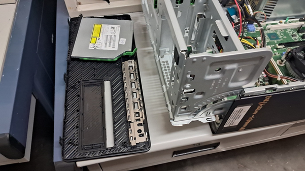
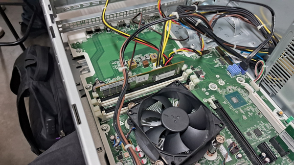
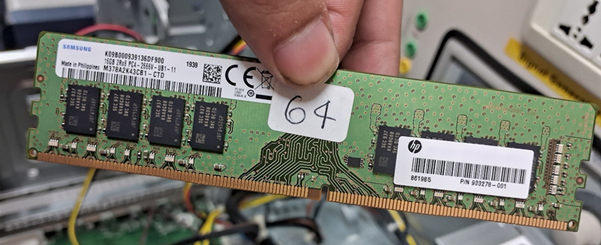
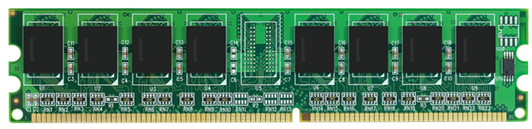
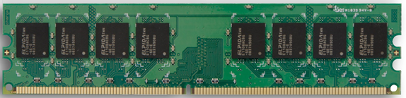
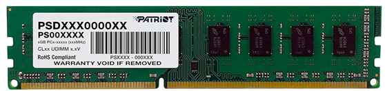
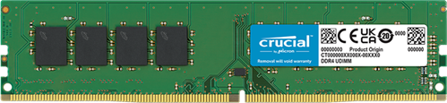
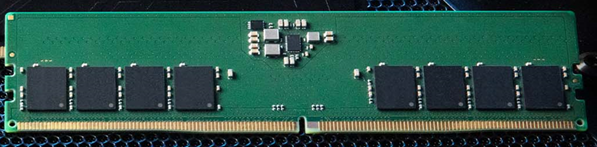

Alumno: Reynaldo Enríquez Zamorano
Materia: Arquitectura de Computadoras
Fecha: 20/11/2025
1. Desensambla el equipo y desconecta la memoria RAM de la ranura
2. Explica DDR1, DDR2, DDR3, DDR4 y DDR5
Primero que nada, abrimos el gabinete para tener acceso al interior del equipo.

En la tarjeta madre se encuentra una o más ranuras para memorias RAM. Estas memorias deben de ser de un modelo compatible con la tarjeta madre para optimizar el rendimiento del sistema.

Para sacar la memoria RAM, se presiona en los clips blancos al los lados de la ranura, hasta que se libre la memoria.

Para volver a meterla solo se aplica presión en la parte superior hasta que se meta en la ranura. Es muy importante asegurar que la memoria RAM se ponga en el lado correcto para no causar errores o componentes dañados.
DDR significa Double Data Rate, lo cual engloba a el tipo de memorias RAM que tienen la tecnología para realizar dos transferencias de datos por un ciclo del reloj (dos de escritura y dos de lectura). El termino completo es Memoria de Acceso Aleatorio Dinámica Síncrona de Doble Tasa de Datos (SDRAM DDR), sincrónica en términos que opera sincronizada con el reloj del sistema y dinámica en términos de que requiere un refresco constante para mantener datos. Cuando se origino fue un gran avance en la tecnología de memorias RAM, con un procesamiento más rápido y eficiente, permitiendo manejar mas tareas que todos sus competidores contemporáneos. Dentro de los estándares para memorias RAM, JEDEC incluye las especificaciones de cada generación de DDR, incluyendo:
La generación original de DDR, tuvo su lanzamiento en 2000, pero solo empezó a ser popular a inicios de 2002. Marcó un hito en su época, duplicando efectivamente la tasa de transferencia de datos de las memorias anteriores. Ofrecía:

Lanzada a finales de 2003 e inicios de 2004, estas generaciones su momento fue un punto importante en la evolución de memoria volátil, teniendo un voltaje muy bajo para la época junto con su velocidad. Especificaciones:

Esta generación se lanzó en 2007, mostrando otra vez una mejora general en todos sus atributos, junto con perfiles XMP.

Actualmente la penúltima generación de memoria RAM DDR, esta generación se sigue utilizando para sistemas menos exigentes. Lanzado en 2014.

Lanzada en 2020, esta es la generación más reciente, utilizada en la actualidad para sistemas de gama alta y alto rendimiento. Aparte de sus mejoras generales, tiene la habilidad de detectar y corregir errores antes de que lleguen al procesador.
